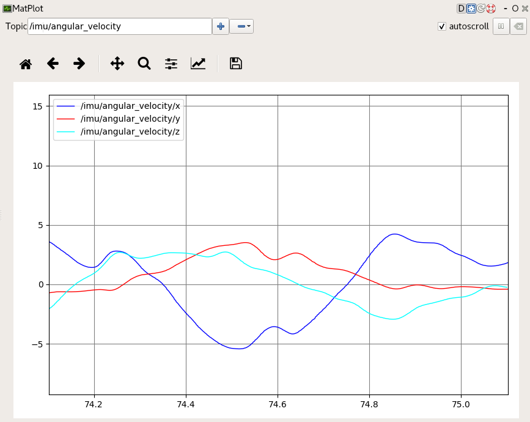

Robot Operating System (ROS)¶
Overview¶
The OpenZen ROS driver is hosted in a separate git repository. In provides the ROS package to readout OpenZen sensors and provide IMU and magnetometer measurements via ROS topics.
Compilation¶
To compile this driver in your ROS setup, follow these steps:
mkdir -p catskin_ws/src
cd catskin_ws/src
git clone --recurse-submodules https://bitbucket.org/lpresearch/openzenros.git
# get your ROS environment going
source /opt/ros/melodic/setup.bash
catkin_make
source ./devel/setup.bash
Running the Driver¶
Open another terminal window and run the ROS core:
source /opt/ros/melodic/setup.bash
roscore
You can then run the OpenZen ROS driver with this command in the window you used to compile the software:
rosrun openzen_sensor openzen_sensor_node
By default, it will connect to the first available sensor. If you want to connect to a specific sensor, you can use the serial name of the sensor as parameter, for example:
rosrun openzen_sensor openzen_sensor_node _sensor_name:="LPMSCU2000573"
If your sensor is configured for a different baud rate, you can use the baudrate parameter to give a specfic baud rate setting:
rosrun openzen_sensor openzen_sensor_node _sensor_name:="LPMSCU2000573" _baudrate:=115200
Now you can print the IMU values from ROS with:
rostopic echo /imu/data
Or plot some values (for example linear acceleration) with
rosrun rqt_plot rqt_plot /imu/data/linear_acceleration
If you want to readout the values of two OpenZen sensors simultanously, you need to rename the topics and the node names likes this:
rosrun openzen_sensor openzen_sensor_node __name:="cu2node" _sensor_name:="LPMSCU2000573" imu:=/cu2_imu
rosrun openzen_sensor openzen_sensor_node __name:="ig1_node" _sensor_name:="LPMSIG1000032" imu:=/ig1_imu
You can also select another IO interface, for example Bluetooth:
rosrun openzen_sensor openzen_sensor _sensor_interface:="Bluetooth" _sensor_name:="00:11:22:33:FF:EE"
Alternatively, you can use the sample launch file (openzen_lpms_ig1.launch) start data acquisition and plotting using openzen_sensor_node:
roslaunch openzen_sensor openzen_lpms_ig1.launch
Supported Hardware¶
This driver should work with IMUs that use the LPMS LPBus protocol. Tested Hardware:
LPMS-IG1
LPMS-CU2
ROS API¶
openzen_sensor_node¶
lpms_ig1_node is a driver for the LPMS Inertial Measurement Unit. It publishes orientation, angular velocity, linear acceleration and magnetometer data (covariances are not yet supported), and complies with the Sensor message for IMU API and MagneticField API.
Published Topics¶
- /imu/data (sensor_msgs/Imu)
Inertial data from the IMU. Includes calibrated acceleration, calibrated angular rates and orientation. The orientation is always unit quaternion.
- /imu/mag (sensor_msgs/MagneticField)
Magnetometer reading from the sensor.
- /imu/is_autocalibration_active (std_msgs/Bool)
Latched topic indicating if the gyro autocalibration feature is active
Services¶
- /imu/calibrate_gyroscope (std_srvs/Empty)
This service activates the IMU internal gyro bias estimation function. Please make sure the IMU sensor is placed on a stable platform with minimal vibrations before calling the service. Please make sure the sensor is stationary for at least 4 seconds. The service call returns a success response once the calibration procedure is completed.
- /imu/reset_heading (std_srvs/Empty)
This service will reset the heading (yaw) angle of the sensor to zero.
- /imu/enable_gyro_autocalibration (std_srvs/SetBool)
Turn on/off autocalibration function in the IMU. The status of autocalibration can be obtained by subscribing to the /imu/is_autocalibration_active topic. A message will published to /imu/is_autocalibration_active for each call to /imu/autocalibrate.
Parameters¶
- ~sensor_name (string, default: null)
By default, the library will connect to the first available sensor. If you want to connect to a specific sensor, you can use the serial name of the sensor as sensor_name parameter as follow:
$ rosrun openzen_sensor openzen_sensor_node _sensor_name:=”LPMSCU2000573”
- ~sensor_interface (string, default: LinuxDevice)
Name of IO system for initiating sensor connection. Use “LinuxDevice” for usb connection in Linux. For more details, please check the documentation in the section IO Systems.
- ~baudrate (integer, default: 0)
Baudrate in bits per seconds used to connect to the sensor. If the baudrate is left at 0, OpenZen will automatically pick the default baudrate for the respective sensor model.
- ~frame_id (string, default: imu)
The frame in which imu readings will be returned.